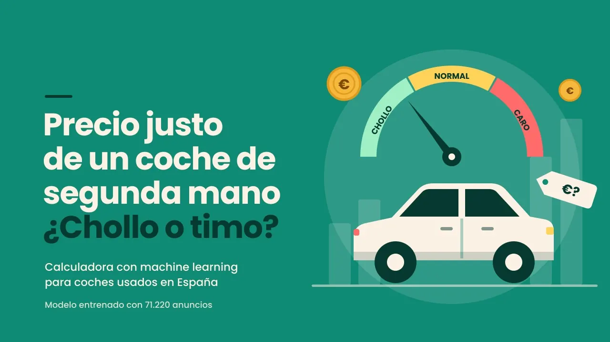

¿Encarecen los pisos turísticos el alquiler en Madrid?
Crucé 5 fuentes públicas para analizar 100 barrios y separar el efecto de los pisos turísticos del de la ubicación y la renta. El resultado: un dashboard de Power BI para que cualquiera pueda explorar los datos.
Sí, pero poco. Los barrios con más pisos turísticos tienen alquileres algo más caros incluso descontando renta y distancia al centro, pero el efecto es de como mucho ~31 €/mes en un piso de 70 m² (un 2,2 % del alquiler medio). Lo que de verdad marca el precio es la ubicación y la renta; el impacto solo es notable en el distrito Centro.
- Rol
- Proyecto individual
- Fecha
- jul – oct 2026
- Datos
- 5 fuentes · 21.978 anuncios
- Herramientas
- Python · Power BI
¿Suben los alquileres por culpa de los pisos turísticos?
Se habla mucho de si los pisos turísticos tienen la culpa de que suban los alquileres. Pero los barrios con más Airbnb también suelen ser los más céntricos y los más demandados, así que comparar precios sin más no responde a la pregunta.
¿Los barrios con más pisos turísticos tienen alquileres más caros, una vez descontados la renta, la distancia al centro y el crecimiento de población?
De 5 fuentes sueltas a un dashboard
Extracción e integración
Idealista (web scraping), Inside Airbnb, INE, Ayuntamiento de Madrid y callejero GeoJSON en un único dataset.
Python · ETLGeoespacial
Spatial join para asignar los 21.978 anuncios a su barrio y calcular la distancia al centro.
GeoPandasCalidad del dato
Validación de merges, nulos, duplicados, outliers y rangos de plausibilidad.
pandasEDA y modelado
Correlación de Spearman, multicolinealidad (VIF), regresión OLS con test RESET y clustering K-means.
statsmodels · scikit-learnBI y comunicación
Dashboard de 8 páginas con modelo de datos y medidas DAX, pensado para un público no técnico.
Power BI · DAXResultados: alquiler, pisos turísticos y renta por barrio
El alquiler aprieta en casi toda la ciudad
- Alquiler medio de un piso de 70 m²: 1.483 €/mes.
- Un piso de 100 m² supera el 30 % de la renta en 91 de cada 100 barrios.
- En los barrios de renta baja el esfuerzo es del 47 %, el doble que en los de renta alta (23 %).
Esfuerzo del alquiler sobre la renta del hogar
Los pisos turísticos están muy concentrados
- El 43 % de los anuncios está en un solo distrito: Centro.
- Media de Madrid: 1,8 pisos turísticos por cada 100 viviendas. En Sol: 26,7.
- Los 6 barrios más turísticos son todos del distrito Centro.
Densidad de anuncios turísticos por barrio
Lo que más pesa es la ubicación y la renta
El modelo explica el 70 % de las diferencias de precio entre barrios. Para un piso de 70 m²:
- −55 €/mes por cada km más lejos del centro.
- +14 €/mes por cada 1.000 € más de renta por persona en el barrio.
- +12 €/mes por cada punto de crecimiento de población.
¿Y los pisos turísticos? Su efecto es estadísticamente significativo (p = 0,033), pero pequeño: como mucho unos 31 €/mes en un piso de 70 m², un 2,2 % del alquiler medio.
Distancia al centro y renta frente al precio por m²
Tres perfiles de barrio
Con K-means (método del codo y coeficiente silhouette), los barrios se agrupan en centro turístico, residencial caro y residencial asequible.
El centro turístico tiene 7 veces más pisos turísticos que el residencial caro, pero casi el mismo precio. Su problema es que sus vecinos ganan menos.
Cada punto es un barrio; el color es su perfil
¿Y si los pisos turísticos volvieran al alquiler?
Simulé qué pasaría si los pisos turísticos volvieran a ser vivienda habitual:
| Tipo de barrio | Ahorro probable | Ahorro máximo |
|---|---|---|
| Centro turístico | 113 €/mes | 240 €/mes |
| Residencial caro | 15 €/mes | 32 €/mes |
| Residencial asequible | 6 €/mes | 12 €/mes |
| Madrid | 15 €/mes | 31 €/mes |
El impacto se nota en el centro, pero en el resto de la ciudad apenas cambia el alquiler.
Escenario interactivo con un parámetro «¿y si…?»
Qué significa para la toma de decisiones
El precio lo marcan la ubicación y la renta
La distancia al centro y la renta del barrio explican la mayor parte de las diferencias de alquiler.
Los pisos turísticos suman, pero poco
Su efecto existe, pero en la mayoría de barrios es de pocos euros al mes. Donde de verdad se nota es en el distrito Centro.
Medidas más eficaces si se focalizan
Regular los pisos turísticos tendría impacto real en Centro; en el resto de la ciudad, el problema es el esfuerzo sobre la renta.
El reto es la accesibilidad
Con una media de 1.483 €/mes por 70 m², el alquiler supera el umbral del 30 % de la renta en casi toda la ciudad.
Lo que aprendí
- Cruzar fuentes es la mayor parte del trabajo. Validar cada merge evitó conclusiones sobre datos mal unidos.
- Significativo no es lo mismo que importante. Un efecto puede ser estadísticamente real y tener poco impacto en euros.
- El dashboard es para quien decide. Cada página responde a una sola pregunta con un titular.
Fuentes de datos
Stack
¿Te cuento más?
Revisa el código o escríbeme y te enseño el dashboard en directo.
Otros proyectos

¿Chollo o timo? Precio justo de un coche usado
71.220 anuncios y un modelo CatBoost publicado como app.
Ver case study →VERSUS: −37 % de coste por adquisición
Embudo, palabras clave y landing de captación.
Ver case study →WINNDER: de ROAS negativo a break-even
Creatividades UGC, TikTok y búsquedas de marca.
Ver case study →